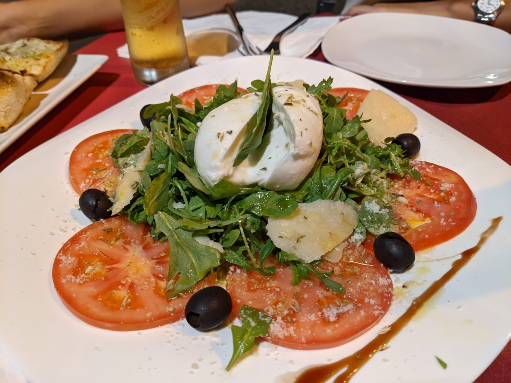

Principales lugares para comer en Tenerife
En Tenerife puedes disfrutar de una amplia gama de restaurantes, bares y guachinches.

Plazale Pizzeria
Sillas de mimbre y plantas crean ambiente en este acogedor restaurante donde degustar pizzas y tiramisú.
Green Chilli Indian Tandoori Restaurant
Este restaurante le ofrece buena comida y un lugar para descansar después de un largo paseo por Magma Arte & Congresos. Prueba el menú de cocina india en Green Chilli Indian Tandoori Restaurant. Ven a este lugar a probar pollo bien cocinado, naans de queso y naans de ajo.
Welcome India
Welcome India, un restaurante que alcanza la auténtica esencia de la cocina india. Ofrecemos los mejores productos, frescos a diario, elegidos uno a uno y cocinados por nuestros experimentados cocineros.
Delhi Darbar
¡Ven y experimenta lo mejor de la cocina india en Tenerife! Le damos la bienvenida a Delhi Darbar, ¡los mejores restaurantes indios de Tenerife! Le presentamos los mejores y más deliciosos platos del vibrante país de la India. Híncale el diente a alguno de los deliciosos currys, pan Naan, biryani y mucho más.
Restaurante La Casona del Vino
Cálido comedor campero con techo de madera especializado en arroz caldoso de marisco y cocina canaria.
McGuires Irish Bar
Bar irlandés situado en Sunset Bay Torviscas. Abierto desde las 9 de la mañana todos los días sirviendo desayunos, almuerzos y comidas principales hasta las 10 de la noche. Ven y únete a nosotros para un poco de craic increíble, deportes en vivo a través de nuestras 12 grandes pantallas de alta definición y deliciosa comida casera.
Beer Garden Tenerife
Siéntese, relájese al sol y tómese una copa en el Beer Garden. Servimos licores de primera calidad, cócteles increíbles y una gran selección de cervezas. Empápate del ambiente y disfruta de un bocado en nuestra fabulosa y moderna terraza en pleno corazón de San Eugenio Live UK Sports Sunny Terrace Abierto 7 días a la semana Comida servida a diario

Ibéricos Gastro-bar
Especialidades ibéricas, además de diferentes opciones de comidas, variedad en vinos, deliciosos cocteles, entre otras bebidas, buen ambiente y excelente atención.
Casa Gusto
Descubrirá nuestro trabajo realizado con productos de buena calidad que garantizan un resultado agradable de una fusión entre la comida española y francesa.